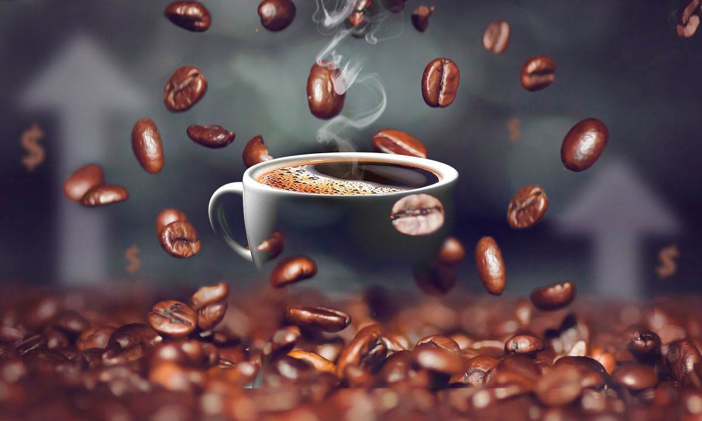

Inicio
Productos
CAFE B&M
Bienvienidos a la pagina del mercado de productos de cafe del barrio Vicenzo Grande
Para ver nuestros productos, ve a la seccion Productos en la parte superior de la pagina
